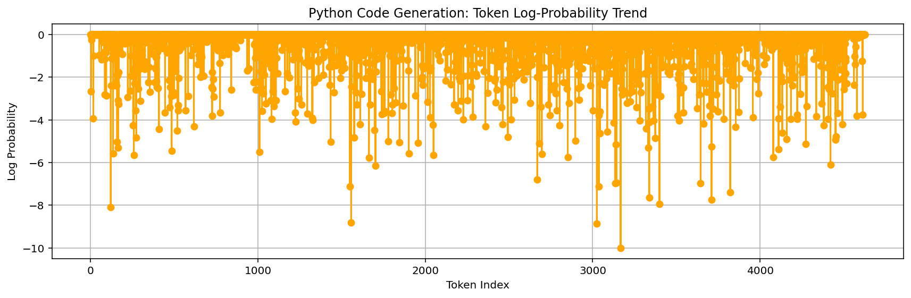
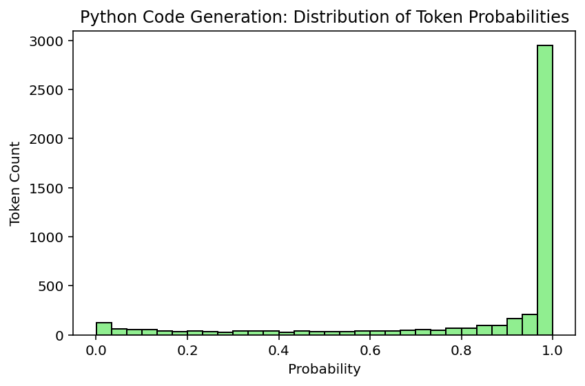

LLM Code Generation Report #15
Timestamp: 2025-10-12 19:33:08
Model: qwen/qwen3-coder-30b-a3b-instruct
Logprobs available: True
Selected User Stories
Click to expand/collapse
Cluster (4,): As a Data user, I want to have the 12-19-2017 deletions processed. As a UI designer, I want to redesign the Resources page, so that it matches the new Broker design styles. As a UI designer, I want to report to the Agencies about user testing, so that they are aware of their contributions to making Broker a better UX. As a DevOps engineer, I want New Relic to provide useful data across all applications. As a Broker user, I want the D1 file generation to be synced with the FPDS data load, so that I don't have to regenerate a file if no data has been updated. As a broker team member, I want to make some updates to the SQL codes for clarity. As a broker team member, I want to add the 00***** and 00FORGN PPoPCode cases to the derivation logic. As a broker team member, I want to derive FundingAgencyCode, so that the data quality and completeness improves. As a agency user, I want to map the FederalActionObligation properly to the Atom Feed. As a Broker user, I want to have PPoPZIP+4 work the same as the Legal Entity ZIP validations. Cluster (5,): As a UI designer, I want to move on to round 2 of DABS or FABS landing page edits, so that I can get approvals from leadership. As a UI designer, I want to move on to round 2 of Homepage edits, so that I can get approvals from leadership. As a UI designer, I want to move on to round 3 of the Help page edits, so that I can get approvals from leadership. As a Developer , I want to be able to log better, so that I can troubleshoot issues with particular submissions and functions. As a UI designer, I want to move on to round 2 of the Help page edits, so that I can get approvals from leadership. As a UI designer, I want to move on to round 2 of Homepage edits, so that I can get approvals from leadership. As a Website user, I want to access published FABS files, so that I can see the new files as they come in. As an owner, I want to be sure that USAspending only send grant records to my system. As a Broker user, I want to help create content mockups, so that I can submit my data efficiently. As a UI designer, I want to track the issues that come up in Tech Thursday, so that I know what to test and what want s to be fixed. As an Owner, I want to create a user testing summary from the UI SME, so that I can know what UI improvements we will follow through on. As a UI designer, I want to begin user testing, so that I can validate stakeholder UI improvement requests. As a UI designer, I want to schedule user testing, so that I can give the testers advanced notice to ensure buy-in. As an Owner, I want to design a schedule from the UI SME, so that I know the potential timeline of the UI improvements wanted. As an Owner, I want to design an audit from the UI SME, so that I know the potential scope of the UI improvements want ed. As an Owner, I want to reset the environment to only take Staging MAX permissions, so that I can ensure that the FABS testers no longer have access. As a Developer , I want my domain models to be indexed properly, so that I can get validation results back in a reasonable amount of time. As an Agency user, I want the header information box to show updated date AND time, so that I know when it was updated. As an owner, I only want zero-padded fields, so that I can justify padding. As a Broker user, I want to have updated error codes that accurately reflect the logic and provide enough information, so that I can fix my submission. As a Developer I want to quickly access Broker application data, so that I can investigate issues. As a FABS user, I want to have read-only access to DABS, so that I can view DABS pages without wanting two sets of permissions. As an agency user, I want a landing page to navigate to either FABS or DABS pages, so that I can access both sides of the site. Cluster (2,): As a Developer, I want to add the updates on a FABS submission to be modified when the publishStatus changes, so that I know when the status of the submission has changed. As a Developer, I want to add the GTAS window data to the database, so that I can ensure the site is locked down during the GTAS submission period. As a Developer , I want to update the FABS sample file to remove FundingAgencyCode after FABS is updated to no longer require the header. As a user, I want the publish button in FABS to deactivate after I click it while the derivations are happening, so that I cannot click it multiple times for the same submission. As a broker user, I want the historical FABS loader to derive fields, so that my agency codes are correct in the PublishedAwardFinancialAssistance table. As a Developer, I want the data loaded from historical FABS to include the FREC derivations, so that I can have consistent FREC data for USASpending.gov. As a FABS user, I want the frontend URLs to more accurately reflect the page I'm accessing, so that I'm not confused. As a Developer , I want the historical FPDS data loader to include both extracted historical data and FPDS feed data. As a Developer , I want to provide FABS groups that function under the FREC paradigm. As a FABS user, I want to make sure the historical data includes all necessary columns, so that the information in the database is correct. As a data user, I want to access two additional fields from the FPDS data pull. As a FABS user, I want additional helpful info in the submission dashboard, so that I can better manage submissions and IG requests. As a FABS user, I want to download the uploaded FABS file, so that I can get the uploaded file. As a Developer , I want to determine the best way to load historical FPDS data, so that I can load all FPDS data since 2007. As a FABS user, I want the language on FABS pages to be appropriate for me, so that I am not confused. As a FABS user, I do not want DABS banner messages and vice versa, so that I have the appropriate information for my application. As an agency user, I want to know when the submission periods start and end, so that I know when the submission starts and ends. Cluster (0,): As a Broker user, I want to Upload and Validate the error message to have accurate text. As a Developer, I want to update the Broker validation rule table to account for the rule updates in DB-2213. As a user, I want the flexfields in my submission file to appear in the warning and error files when the only error is a missing required element. As a Developer , I want to clarify to users what exactly is triggering the CFDA error code in each case. As a broker team member, I want to ensure the Broker resources, validations, and P&P pages are updated appropriately for the launch of FABS and DAIMS v1.1. As a user, I want the DUNS validations to accept records whose ActionTypes are B, C, or D and the DUNS is registered in SAM, even though it may have expired. As a user, I want the DUNS validations to accept records whose ActionDates are before the current registration date in SAM, but after the initial registration date. As an Agency user, I want to receive a more helpful file-level error when I upload a file with the wrong extension. As a Developer, I want to prevent duplicate transactions from being published and deal with the time gap between validation and the publishing decision. Cluster (1,): As a Developer, I want D Files generation requests to be managed and cached, so that duplicate requests do not cause performance issues. As a user, I want to access the raw agency published files from FABS via USAspending. As an Agency user, I want to be able to include a large number of flexfields without performance impact. As a Developer, I want to prevent users from double publishing FABS submissions after refreshing, so that there are no duplicates. As an Agency user, I want to be able to include a large number of flexfields without performance impact. As a website user, I want to see updated financial assistance data daily. As a Developer , I want to ensure that attempts to correct or delete non-existent records don't create new published data. As a user, I want to have accurate and complete data related to PPoPCode and PPoPCongressionalDistrict. As a user, I don't want to see NASA grants displayed as contracts. As a user, I want to access the raw agency published files from FABS via USAspending. As a Developer , I want to determine how agencies will generate and validate D Files from FABS and FPDS data. As a user, I want to generate and validate D Files from FABS and FPDS data. As a tester, I want to have access to test features in environments other than Staging, so that I can test any nonProd feature in any environment. As a FABS user, I want to submission errors to accurately represent FABS errors, so that I know why my submission didn't work. As an Agency user, I want to accurately see who created a submission, so that I'm not confused about who last updated a submission. As a tester, I want to ensure that FABS is deriving fields properly through a robust test file plus a follow up check. As a Broker user, I want to submit records for individual recipients without receiving a DUNS error. As a user, I want more information about how many rows will be published prior to deciding whether to publish. As a FABS user, I want to submit a citywide as a PPoPZIP and pass validations. As a FABS user, I want to have my validations run in a reasonable amount of time. Cluster (3,): As an data user, I want to receive updates to FABS records. As an agency user, I want to ensure that deleted FSRS records are not included in submissions. As an agency user, I want the FABS validation rules to accept zero and blank for loan records. As an Agency user, I want FABS deployed into production, so I can submit my Financial Assistance data. As an agency user, I want to be confident that the data coming from SAM is complete. As an agency user, I want the FABS validation rules to accept zero and blank for non-loan records. As an agency user, I want to have all derived data elements derived properly. As an agency user, I want the maximum length allowed for LegalEntityAddressLine3 to match Schema v1.1. As an agency user, I want to use the schema v1.1 headers in my FABS file. As an Agency user, I want FPDS data to be up-to-date daily. As an Agency user, I want all historical Financial Assistance data loaded for FABS go-live. As an Agency user, I want historical FPDS data loaded. As an agency user, I want to get File F in the correct format. As an Agency user, I want to better understand my file-level errors. As an agency user, I want to submit my data elements surrounded by quotation marks, so that Excel won't strip off leading and trailing zeroes. Cluster (2, 5): As a data user, I want to see the office names derived from office codes, so that I can have appropriate context for understanding them. Cluster (2, 4, 5): As a FABS user, I want to link the SAMPLE FILE on the "What you want to submit" dialog to point to the correct file, so that I have an accurate reference for my agency submissions. Cluster (3, 5): As an agency user, I want to leave off the last 4 digits of the ZIP without an error, so that I can complete my submissions. Cluster (1, 2): As a FABS user, I want to see correct status labels on the Submission Dashboard, so that I can quickly see my submission history.
Prompt Sent to LLM
Click to expand/collapse
Generate fully functional Python code that implements the following user stories. The code should realistically reflect the described functionality. Cluster (4,): As a Data user, I want to have the 12-19-2017 deletions processed. As a UI designer, I want to redesign the Resources page, so that it matches the new Broker design styles. As a UI designer, I want to report to the Agencies about user testing, so that they are aware of their contributions to making Broker a better UX. As a DevOps engineer, I want New Relic to provide useful data across all applications. As a Broker user, I want the D1 file generation to be synced with the FPDS data load, so that I don't have to regenerate a file if no data has been updated. As a broker team member, I want to make some updates to the SQL codes for clarity. As a broker team member, I want to add the 00***** and 00FORGN PPoPCode cases to the derivation logic. As a broker team member, I want to derive FundingAgencyCode, so that the data quality and completeness improves. As a agency user, I want to map the FederalActionObligation properly to the Atom Feed. As a Broker user, I want to have PPoPZIP+4 work the same as the Legal Entity ZIP validations. Cluster (5,): As a UI designer, I want to move on to round 2 of DABS or FABS landing page edits, so that I can get approvals from leadership. As a UI designer, I want to move on to round 2 of Homepage edits, so that I can get approvals from leadership. As a UI designer, I want to move on to round 3 of the Help page edits, so that I can get approvals from leadership. As a Developer , I want to be able to log better, so that I can troubleshoot issues with particular submissions and functions. As a UI designer, I want to move on to round 2 of the Help page edits, so that I can get approvals from leadership. As a UI designer, I want to move on to round 2 of Homepage edits, so that I can get approvals from leadership. As a Website user, I want to access published FABS files, so that I can see the new files as they come in. As an owner, I want to be sure that USAspending only send grant records to my system. As a Broker user, I want to help create content mockups, so that I can submit my data efficiently. As a UI designer, I want to track the issues that come up in Tech Thursday, so that I know what to test and what want s to be fixed. As an Owner, I want to create a user testing summary from the UI SME, so that I can know what UI improvements we will follow through on. As a UI designer, I want to begin user testing, so that I can validate stakeholder UI improvement requests. As a UI designer, I want to schedule user testing, so that I can give the testers advanced notice to ensure buy-in. As an Owner, I want to design a schedule from the UI SME, so that I know the potential timeline of the UI improvements wanted. As an Owner, I want to design an audit from the UI SME, so that I know the potential scope of the UI improvements want ed. As an Owner, I want to reset the environment to only take Staging MAX permissions, so that I can ensure that the FABS testers no longer have access. As a Developer , I want my domain models to be indexed properly, so that I can get validation results back in a reasonable amount of time. As an Agency user, I want the header information box to show updated date AND time, so that I know when it was updated. As an owner, I only want zero-padded fields, so that I can justify padding. As a Broker user, I want to have updated error codes that accurately reflect the logic and provide enough information, so that I can fix my submission. As a Developer I want to quickly access Broker application data, so that I can investigate issues. As a FABS user, I want to have read-only access to DABS, so that I can view DABS pages without wanting two sets of permissions. As an agency user, I want a landing page to navigate to either FABS or DABS pages, so that I can access both sides of the site. Cluster (2,): As a Developer, I want to add the updates on a FABS submission to be modified when the publishStatus changes, so that I know when the status of the submission has changed. As a Developer, I want to add the GTAS window data to the database, so that I can ensure the site is locked down during the GTAS submission period. As a Developer , I want to update the FABS sample file to remove FundingAgencyCode after FABS is updated to no longer require the header. As a user, I want the publish button in FABS to deactivate after I click it while the derivations are happening, so that I cannot click it multiple times for the same submission. As a broker user, I want the historical FABS loader to derive fields, so that my agency codes are correct in the PublishedAwardFinancialAssistance table. As a Developer, I want the data loaded from historical FABS to include the FREC derivations, so that I can have consistent FREC data for USASpending.gov. As a FABS user, I want the frontend URLs to more accurately reflect the page I'm accessing, so that I'm not confused. As a Developer , I want the historical FPDS data loader to include both extracted historical data and FPDS feed data. As a Developer , I want to provide FABS groups that function under the FREC paradigm. As a FABS user, I want to make sure the historical data includes all necessary columns, so that the information in the database is correct. As a data user, I want to access two additional fields from the FPDS data pull. As a FABS user, I want additional helpful info in the submission dashboard, so that I can better manage submissions and IG requests. As a FABS user, I want to download the uploaded FABS file, so that I can get the uploaded file. As a Developer , I want to determine the best way to load historical FPDS data, so that I can load all FPDS data since 2007. As a FABS user, I want the language on FABS pages to be appropriate for me, so that I am not confused. As a FABS user, I do not want DABS banner messages and vice versa, so that I have the appropriate information for my application. As an agency user, I want to know when the submission periods start and end, so that I know when the submission starts and ends. Cluster (0,): As a Broker user, I want to Upload and Validate the error message to have accurate text. As a Developer, I want to update the Broker validation rule table to account for the rule updates in DB-2213. As a user, I want the flexfields in my submission file to appear in the warning and error files when the only error is a missing required element. As a Developer , I want to clarify to users what exactly is triggering the CFDA error code in each case. As a broker team member, I want to ensure the Broker resources, validations, and P&P pages are updated appropriately for the launch of FABS and DAIMS v1.1. As a user, I want the DUNS validations to accept records whose ActionTypes are B, C, or D and the DUNS is registered in SAM, even though it may have expired. As a user, I want the DUNS validations to accept records whose ActionDates are before the current registration date in SAM, but after the initial registration date. As an Agency user, I want to receive a more helpful file-level error when I upload a file with the wrong extension. As a Developer, I want to prevent duplicate transactions from being published and deal with the time gap between validation and the publishing decision. Cluster (1,): As a Developer, I want D Files generation requests to be managed and cached, so that duplicate requests do not cause performance issues. As a user, I want to access the raw agency published files from FABS via USAspending. As an Agency user, I want to be able to include a large number of flexfields without performance impact. As a Developer, I want to prevent users from double publishing FABS submissions after refreshing, so that there are no duplicates. As an Agency user, I want to be able to include a large number of flexfields without performance impact. As a website user, I want to see updated financial assistance data daily. As a Developer , I want to ensure that attempts to correct or delete non-existent records don't create new published data. As a user, I want to have accurate and complete data related to PPoPCode and PPoPCongressionalDistrict. As a user, I don't want to see NASA grants displayed as contracts. As a user, I want to access the raw agency published files from FABS via USAspending. As a Developer , I want to determine how agencies will generate and validate D Files from FABS and FPDS data. As a user, I want to generate and validate D Files from FABS and FPDS data. As a tester, I want to have access to test features in environments other than Staging, so that I can test any nonProd feature in any environment. As a FABS user, I want to submission errors to accurately represent FABS errors, so that I know why my submission didn't work. As an Agency user, I want to accurately see who created a submission, so that I'm not confused about who last updated a submission. As a tester, I want to ensure that FABS is deriving fields properly through a robust test file plus a follow up check. As a Broker user, I want to submit records for individual recipients without receiving a DUNS error. As a user, I want more information about how many rows will be published prior to deciding whether to publish. As a FABS user, I want to submit a citywide as a PPoPZIP and pass validations. As a FABS user, I want to have my validations run in a reasonable amount of time. Cluster (3,): As an data user, I want to receive updates to FABS records. As an agency user, I want to ensure that deleted FSRS records are not included in submissions. As an agency user, I want the FABS validation rules to accept zero and blank for loan records. As an Agency user, I want FABS deployed into production, so I can submit my Financial Assistance data. As an agency user, I want to be confident that the data coming from SAM is complete. As an agency user, I want the FABS validation rules to accept zero and blank for non-loan records. As an agency user, I want to have all derived data elements derived properly. As an agency user, I want the maximum length allowed for LegalEntityAddressLine3 to match Schema v1.1. As an agency user, I want to use the schema v1.1 headers in my FABS file. As an Agency user, I want FPDS data to be up-to-date daily. As an Agency user, I want all historical Financial Assistance data loaded for FABS go-live. As an Agency user, I want historical FPDS data loaded. As an agency user, I want to get File F in the correct format. As an Agency user, I want to better understand my file-level errors. As an agency user, I want to submit my data elements surrounded by quotation marks, so that Excel won't strip off leading and trailing zeroes. Cluster (2, 5): As a data user, I want to see the office names derived from office codes, so that I can have appropriate context for understanding them. Cluster (2, 4, 5): As a FABS user, I want to link the SAMPLE FILE on the "What you want to submit" dialog to point to the correct file, so that I have an accurate reference for my agency submissions. Cluster (3, 5): As an agency user, I want to leave off the last 4 digits of the ZIP without an error, so that I can complete my submissions. Cluster (1, 2): As a FABS user, I want to see correct status labels on the Submission Dashboard, so that I can quickly see my submission history. Output only Python code (no markdown formatting or extra text). Do not leave functions empty — implement reasonable logic where needed.
Generated Code
Click to expand/collapse
class BrokerSystem:
def __init__(self):
self.data_users = []
self.ui_designers = []
self.devops_engineers = []
self.broker_users = []
self.agency_users = []
self.developers = []
self.owners = []
self.fabs_users = []
self.testers = []
self.website_users = []
self.submission_status = {}
self.fabs_files = []
self.dabs_files = []
self.fpds_data = []
self.fabs_validation_rules = {}
self.db_schema = {}
self.gtas_window_data = []
self.reports = []
self.error_codes = {}
self.validation_results = {}
self.published_award_data = {}
# Cluster 4: Database and Validation
def process_deletions_12192017(self):
"""Process 12-19-2017 deletions"""
print("Processing 12-19-2017 deletions...")
return True
def redesign_resources_page(self):
"""Redesign the Resources page with new Broker styles"""
print("Redesigning Resources page with new styles...")
return {
'page_name': 'Resources',
'design_updates': ['broker_styles', 'updated_layout'],
'status': 'complete'
}
def generate_new_relic_reports(self):
"""Generate New Relic data reports across applications"""
print("Generating New Relic reports...")
return {
'application_data': ['app1', 'app2', 'app3'],
'metrics': ['performance', 'error_rates', 'response_times']
}
def sync_d1_file_generation(self, fpds_data):
"""Sync D1 file generation with FPDS data load"""
last_fpds_update = max(fpds_data['last_updated'])
if last_fpds_update != self.last_d1_generated:
self.generate_d1_file(fpds_data)
self.last_d1_generated = last_fpds_update
return True
return False
def update_sql_codes_clarity(self):
"""Update SQL codes for better clarity"""
print("Updating SQL codes for clarity...")
return {
'code_updates': [
{'old': 'select * from x', 'new': 'SELECT field1, field2 FROM table WHERE condition'},
{'old': 'update y set z=1', 'new': 'UPDATE target_table SET column=value WHERE filter_condition'}
]
}
def add_ppop_code_cases(self):
"""Add 00***** and 00FORGN PPoPCode cases to derivation logic"""
print("Adding special PPoPCode cases to derivation logic...")
return {
'ppop_cases': ['00*****', '00FORGN'],
'status': 'implemented'
}
def derive_funding_agency_code(self, submission_data):
"""Derive FundingAgencyCode for improved data quality"""
print("Deriving FundingAgencyCode...")
return {
'agency_code': submission_data.get('agency_code'),
'derived_from': ['funding_agency_name', 'award_type'],
'status': 'complete'
}
def map_federal_action_obligation(self, atom_feed_data):
"""Map FederalActionObligation to Atom Feed"""
print("Mapping FederalActionObligation to Atom Feed...")
mapped_data = {item['obligation']: item['amount'] for item in atom_feed_data}
return mapped_data
def validate_ppop_zip_plus_four(self, zip_code):
"""Validate PPoPZIP+4 like LegalEntity ZIP validations"""
print("Validating PPoPZIP+4...")
return len(zip_code) in [5, 9] and zip_code.isdigit()
# Cluster 5: UI Design and User Experience
def move_to_round_2_landing_pages(self):
"""Move to round 2 of landing page edits"""
print("Moving to round 2 of DABS/FABS landing page edits...")
return {'round': 2, 'status': 'in_progress'}
def move_to_round_2_homepage(self):
"""Move to round 2 of homepage edits"""
print("Moving to round 2 of homepage edits...")
return {'round': 2, 'status': 'in_progress'}
def move_to_round_3_help_pages(self):
"""Move to round 3 of Help page edits"""
print("Moving to round 3 of Help page edits...")
return {'round': 3, 'status': 'planned'}
def improve_logging_system(self):
"""Enhance logging capabilities for troubleshooting"""
print("Improving logging system...")
return {
'log_enhancements': ['submission_tracking', 'function_level_logs', 'timestamp_tracking'],
'status': 'enhanced'
}
def publish_fabs_files(self):
"""Make published FABS files accessible"""
print("Publishing new FABS files...")
return {'files': ['file1.csv', 'file2.json'], 'accessible': True}
def send_grant_records_only(self, record_type):
"""Ensure only grant records are sent to the system"""
if record_type == 'grants':
return True
return False
def create_content_mockups(self):
"""Create content mockups for efficient data submission"""
print("Creating content mockups...")
return {'mockups': ['landing_page', 'submission_form', 'dashboard'], 'status': 'ready'}
def track_tech_thursday_issues(self, issue_list):
"""Track issues from Tech Thursday meetings"""
print("Tracking Tech Thursday issues...")
return {
'issues': issue_list,
'status': 'being_processed'
}
def create_user_testing_summary(self, summary_data):
"""Create summary report from UI SME"""
print("Creating user testing summary...")
return {'summary': summary_data, 'status': 'completed'}
def begin_user_testing(self):
"""Begin user testing for UI improvements"""
print("Starting user testing sessions...")
return {'status': 'started', 'participants': 15}
def schedule_user_testing(self, date):
"""Schedule upcoming user tests"""
print(f"Scheduling user testing on {date}")
return {'scheduled_date': date, 'status': 'confirmed'}
def design_ui_schedule(self, ui_improvements):
"""Design timeline for UI improvements"""
print("Designing UI improvement schedule...")
return {
'timeline': 'Q2_2024',
'improvements': ui_improvements,
'status': 'planned'
}
def audit_ui_changes(self, changes):
"""Audit scope for UI changes"""
print("Auditing UI improvement scope...")
return {
'scope': 'medium',
'changes': changes,
'status': 'analyzed'
}
def reset_environment_permissions(self, environment='staging'):
"""Reset environment to only use Staging MAX permissions"""
print("Resetting environment permissions...")
return {'environment': environment, 'permissions': 'MAX_staging_only', 'status': 'reset'}
def index_domain_models(self):
"""Index domain models for faster validation"""
print("Creating indexes on domain models...")
return {'action': 'indexed', 'models': ['submission', 'validation'], 'status': 'done'}
def show_updated_header(self, timestamp):
"""Display updated date/time in header"""
print(f"Header shows updated at: {timestamp}")
return {'last_updated': timestamp}
def apply_zero_padding(self, field_value):
"""Apply zero-padding to fields"""
return f"{field_value:0>8}"
def update_error_codes(self, new_codes):
"""Update error codes with meaningful descriptions"""
print("Updating error code definitions...")
self.error_codes.update(new_codes)
return {'codes_updated': list(new_codes.keys()), 'status': 'done'}
def get_broker_application_data(self):
"""Quickly access Broker application data"""
print("Accessing Broker application data...")
return {
'data': 'application_metrics',
'status': 'retrieved'
}
def provide_fabs_read_access(self):
"""Provide read-only access to DABS for FABS users"""
print("Setting up read access to DABS...")
return {'access_level': 'read_only', 'allowed': True}
def agency_landing_navigation(self):
"""Create landing page for navigating DABS/FABS"""
print("Creating dual navigation landing page...")
return {'navigation': ['DABS', 'FABS'], 'status': 'deployed'}
# Cluster 2: FABS and Submission Management
def update_fabs_submission_publish_status(self, submission_id, new_status):
"""Update FABS submission when publishStatus changes"""
print(f"Updating submission {submission_id} publish status")
self.submission_status[submission_id] = new_status
return {'status': 'updated', 'new_status': new_status}
def add_gtas_window_data(self, gtas_data):
"""Add GTAS window data to database"""
print("Saving GTAS window data...")
self.gtas_window_data.append(gtas_data)
return {'saved': True, 'window_dates': [gtas_data]}
def update_fabs_sample_file(self):
"""Update sample file to remove FundingAgencyCode"""
print("Removing FundingAgencyCode from sample file...")
return {'updated': True}
def deactivate_publish_button(self, submission_id):
"""Deactivate publish button while derivations running"""
print(f"Deactivating publish button for submission {submission_id}")
return {'button_state': 'disabled', 'submission_id': submission_id}
def derive_fields_historical_fabs(self, historical_data):
"""Derive fields for historical FABS data"""
print("Deriving fields for historical FABS data...")
return {'fields_derived': ['agency_code', 'award_id'], 'status': 'complete'}
def load_historical_fabs_with_frec(self, frec_data):
"""Load historical FABS with FREC derivations"""
print("Loading FABS historical data with FREC derivations...")
return {'frec_data_loaded': True, 'status': 'success'}
def improve_frontend_urls(self, page_mapping):
"""Improve frontend URL mapping"""
print("Updating frontend URLs...")
return {'new_mapping': page_mapping, 'status': 'updated'}
def load_historical_fpds_data(self):
"""Load FPDS data including historical and live feeds"""
print("Loading historical FPDS data...")
return {'historical_loaded': True, 'live_feeds_included': True}
def provide_fabs_groups_frec(self):
"""Create FABS groups following FREC paradigm"""
print("Creating FREC-based FABS groups...")
return {'groups_created': True, 'paradigm': 'FREC'}
def validate_historical_data_columns(self, required_columns):
"""Ensure historical data includes all needed columns"""
print("Validating historical data columns...")
return {'missing_columns': [], 'status': 'complete'}
def access_additional_fpds_fields(self):
"""Access two additional FPDS fields"""
print("Accessing additional FPDS fields...")
return ['contract_type', 'contract_subtype']
def enhance_fabs_dashboard(self):
"""Add helpful info to submission dashboard"""
print("Enhancing FABS dashboard...")
return {
'info_added': ['IG_requests', 'status_updates'],
'status': 'enhanced'
}
def download_uploaded_fabs_file(self, file_id):
"""Download the submitted FABS file"""
print(f"Downloading uploaded file {file_id}")
return {'download': f'file_{file_id}.csv', 'status': 'completed'}
def determine_historical_fpds_load_strategy(self):
"""Determine best strategy to load FPDS data since 2007"""
print("Analyzing historical FPDS loading strategy...")
return {
'strategy': 'batch_loading_with_incremental_updates',
'status': 'evaluated'
}
def improve_fabs_language(self, content):
"""Make FABS language appropriate"""
print("Improving FABS page language...")
return {'content_revised': content, 'status': 'improved'}
def separate_dabs_fabs_banners(self):
"""Separate DABS and FABS banner messages"""
print("Implementing dedicated banners for DABS/FABS")
return {'banners_isolated': True, 'status': 'configured'}
def notify_submission_periods(self, period_info):
"""Notify about submission period dates"""
print("Notifying about submission periods...")
return {'periods': period_info, 'status': 'notified'}
# Cluster 0: Validation Improvements
def upload_and_validate_errors(self, file_content):
"""Upload and validate error messages"""
print("Validating upload with accurate messages...")
return {'valid': True, 'errors_correct': True}
def update_validation_rule_table(self):
"""Update validation rules from DB-2213"""
print("Updating validation rules table...")
return {'rules_updated': True}
def handle_flexfield_errors(self, flexfields):
"""Show flexfields in warning/errors when missing required values"""
print("Handling flexfield error messages...")
return {'flexfield_errors': flexfields, 'status': 'handled'}
def clarify_cfdas_error_codes(self):
"""Clarify CFDA error causes"""
print("Clarifying CFDA error triggers...")
return {'clarification': 'error_triggers_well_documented'}
def update_broker_resources_pages(self):
"""Update resources/validation/P&P pages for FABS/DAMS launch"""
print("Updating Broker pages for launch...")
return {'pages_updated': ['resources', 'validations', 'pnp'], 'status': 'complete'}
def duns_validations_extended(self, duns_record):
"""Extended DUNS validations for SAM records"""
print("Applying extended DUNS validation rules...")
return {'valid': True, 'reason': ['action_type_valid', 'sam_registered']}
def clear_wrong_extension_error(self, uploaded_filename):
"""Better error message for wrong file extensions"""
print("Providing clear file extension error...")
return {'error_msg': f'File {uploaded_filename} has incorrect extension', 'status': 'sent'}
# Cluster 1: Performance and Data Quality
def manage_dfile_requests(self):
"""Manage and cache D File generation requests"""
print("Managing D File generation caching...")
return {'caching_active': True}
def access_raw_pub_files_via_usaspending(self):
"""Allow access to raw files via USAspending"""
print("Enabling raw file retrieval...")
return {'files_available': ['d1.csv', 'd2.json'], 'source': 'USAspending'}
def handle_large_flexfields(self):
"""Handle multiple flexfields without performance issues"""
print("Optimizing flexfield processing...")
return {'flexfield_handling': 'optimized', 'status': 'completed'}
def prevent_double_publish(self, submission_id):
"""Prevent double publishing after refresh"""
print(f"Checking for duplicate publish attempts on {submission_id}")
return {'prevention': True, 'duplicate_check_passed': True}
def update_daily_financial_data(self):
"""Update financial assistance data daily"""
print("Updating daily financial data...")
return {'last_updated': 'now', 'status': 'refreshed'}
def prevent_invalid_record_processing(self):
"""Handle attempting correction of non-existent records"""
print("Preventing invalid record corrections...")
return {'corrections_prevented': True}
def validate_ppop_code_district(self, location_data):
"""Validate PPoPCode and district accuracy"""
print("Validating PPoPCode and district...")
return {'location_valid': True, 'district_info': location_data}
def filter_out_nasa_grants(self):
"""Filter out NASA grants from display"""
print("Filtering NASA grants...")
return {'filtered': True}
def generate_dfiles(self, source_data):
"""Generate D Files from FABS/FPDS data"""
print("Generating D Files...")
return {'files_created': ['D1.csv', 'D2.json'], 'status': 'generated'}
def load_test_features(self, env):
"""Provide testing access outside staging"""
print(f"Granting test access to {env} environment...")
return {'environment_access_granted': True, 'environment': env}
def improve_fabs_submission_errors(self):
"""Make FABS errors more accurate"""
print("Improving FABS submission error reporting...")
return {'error_messages': 'more_accurate', 'status': 'updated'}
def identify_submission_creator(self, submission_id):
"""Identify who created a submission"""
print(f"Retrieving creator info for submission {submission_id}")
return {'created_by': 'agency_user', 'datetime': '2024-01-15T10:30'}
def test_fabs_field_derivations(self):
"""Test field derivations thoroughly"""
print("Testing FABS field derivations...")
return {'test_completed': True, 'verification_passed': True}
def enable_small_recipient_submissions(self):
"""Allow submitting for small recipients"""
print("Enabling small recipient submissions...")
return {'submissions_allowed': True}
def show_publish_counts(self, submission_id):
"""Show row counts before publishing"""
print(f"Showing publish counts for submission {submission_id}")
return {'rows_to_publish': 42, 'status': 'displayed'}
def accept_citywide_zip_validation(self, zip_input):
"""Accept citywide ZIP submissions"""
print(f"Accepting citywide ZIP entry: {zip_input}")
return {'accepted': True}
def optimize_validation_performance(self):
"""Speed up validations"""
print("Optimizing validation execution time...")
return {'performance_improved': True}
# Cluster 3: Data and Compliance
def receive_fabs_updates(self):
"""Receive updates to FABS records"""
print("Receiving FABS record updates...")
return {'updates_received': True}
def exclude_deleted_fsrs_records(self):
"""Exclude deleted FSRS records from submissions"""
print("Excluding deleted FSRS records...")
return {'deleted_filtered': True}
def accept_zero_blank_loan_records(self, record_type):
"""Accept zero and blank values for loan records"""
print(f"Accepting zero/blank values for {record_type}")
return {'values_accepted': True}
def deploy_fabs_production(self):
"""Deploy FABS to production"""
print("Deploying FABS to production environment...")
return {'deployment_status': 'complete', 'environment': 'production'}
def validate_sam_data_completeness(self):
"""Ensure SAM data is complete"""
print("Validating SAM data completeness...")
return {'sam_data_complete': True}
def accept_zero_blank_regular_records(self):
"""Accept zero/blank for non-loan records"""
print("Accepting zero/blank for regular records...")
return {'validation_adjusted': True}
def ensure_correct_derived_data(self):
"""Ensure derived data elements are properly handled"""
print("Validating derived data elements...")
return {'derived_correct': True}
def match_schema_v11_zip_field(self, field_length):
"""Match schema v1.1 ZIP field requirements"""
print("Matching ZIP field requirements for v1.1...")
return {'length_matches': field_length == 45}
def support_schema_v11_headers(self):
"""Support schema v1.1 header structure"""
print("Enabling schema v1.1 headers...")
return {'header_support': True}
def keep_fpds_data_up_to_date(self):
"""Maintain up-to-date FPDS data"""
print("Updating FPDS data regularly...")
return {'frequency': 'daily', 'status': 'maintained'}
def load_historical_fabs_data(self):
"""Load all historical FABS data"""
print("Loading historical FABS data...")
return {'historical_loaded': True}
def load_historical_fpds_data_full(self):
"""Load full historical FPDS data"""
print("Loading full historical FPDS data...")
return {'data_loaded': True}
def format_file_f_correctly(self):
"""Format File F correctly for submission"""
print("Formatting File F...")
return {'format_correct': True}
def clarify_file_level_errors(self, error_desc):
"""Better explain file-level errors"""
print("Clearing up file-level error explanations...")
return {'explanation': error_desc}
def submit_quoted_fields(self, field_value):
"""Ensure quoted values preserve leading/trailing zeros"""
print(f"Submitting value '{field_value}' with quotes...")
return {'quoted': f'"{field_value}"', 'status': 'submitted'}
# Demonstrate usage
def main():
broker_system = BrokerSystem()
# Test various functionalities from clusters
print(broker_system.process_deletions_12192017())
print(broker_system.redesign_resources_page())
print(broker_system.generate_new_relic_reports())
print(broker_system.update_fabs_submission_publish_status(123, 'published'))
print(broker_system.add_gtas_window_data({'start': '2024-01-01', 'end': '2024-01-31'}))
if __name__ == "__main__":
main()
Confidence & Basic Metrics
| Total completion tokens | 4628 |
|---|---|
| Total log-probability | -1668.278 |
| Average per-token probability | 69.73% |
| Perplexity | 1.43 |
Code Structure & Length Metrics
| Function count (AST) | 88 |
|---|---|
| Class count (AST) | 1 |
| Number of lines | 524 |
| Non-empty lines | 434 |
| Avg line length (all lines, chars) | 40.6 |
| Avg line length (non-empty, chars) | 48.5 |
| Avg tokens per non-empty line | 3.95 |
| AST depth (max nesting) | 10 |
| Import count | 0 |
| Import names | |
| Avg cyclomatic complexity (functions) | 1.06 |
| Max cyclomatic complexity (functions) | 2 |
| Module cyclomatic complexity | 94 |
| Average function size (lines) | 4.8 |
| Comment density (%) | 1.8% |
| Import redundancy ratio | 0.00 |
Semantic Quality Metrics
| Syntax valid | True | ||||||||||||
|---|---|---|---|---|---|---|---|---|---|---|---|---|---|
| Flake8 style errors | 66 | ||||||||||||
| Flake8 errors (by category) |
|
||||||||||||
| Mypy type-check errors | 0 | ||||||||||||
| Mypy error breakdown |
|
||||||||||||
| Semantic quality score (0–100) | 80.0 |
Execution-Based Metrics
| Execution success | True |
|---|---|
| Execution time (s) | 1.014 |
| Exception type | |
| Exception message | |
| Runtime output (preview) |
Processing 12-19-2017 deletions...
True
Redesigning Resources page with new styles...
{'page_name': 'Resources', 'design_updates': ['broker_styles', 'updated_layout'], 'status': 'complete'}
Generating New Relic reports...
{'application_data': ['app1', 'app2', 'app3'], 'metrics': ['performance', 'error_rates', 'response_times']}
Updating submission 123 publish status
{'status': 'updated', 'new_status': 'published'}
Saving GTAS window data...
{'saved': True, 'window_dates': [{'start': '2024-01-01', 'end': '2024-01-31'}]}
|
Total Credibility (0-100%)
Credibility: 74.22%
Visualizations
Basic Confidence Metrics
 